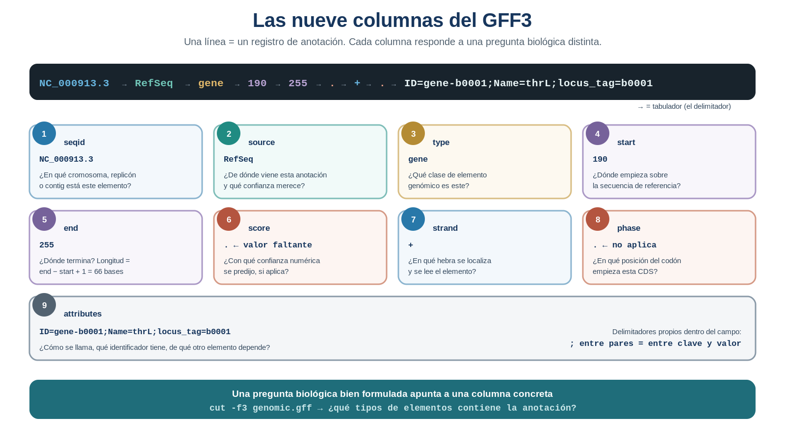
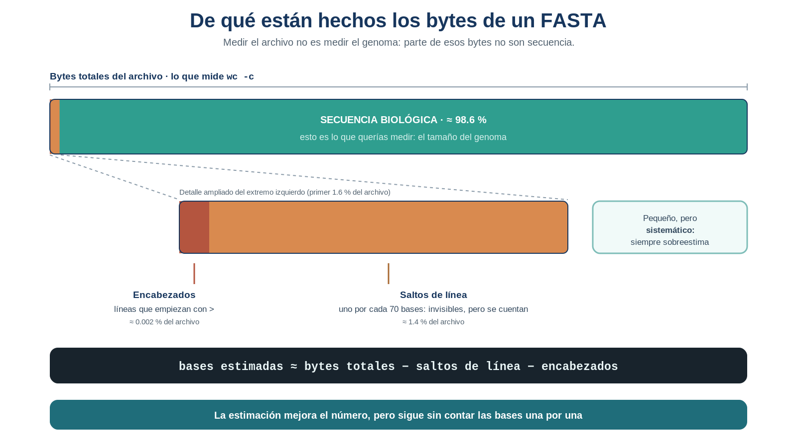

S11 — Localizar: la estructura tabular de la anotación
Antes de clase leerás las secciones marcadas como indispensables y harás un primer intento: traducir tus preguntas biológicas a datos concretos, decidiendo qué información mínima necesitarías para responder cada una, sin abrir todavía ningún archivo. Durante el taller comprobarás dónde está realmente esa información, aprenderás a extraerla y obtendrás una respuesta provisional sobre el número de replicones. Después integrarás todo en doc/protocolo.md. El primer intento es formativo: importa el razonamiento, no el acierto.
Ficha del módulo
| Elemento | Descripción |
|---|---|
| Sesión | S11, 2 horas |
| Unidad | U4. Procesamiento y exploración de datos genómicos |
| Competencia principal | D. Análisis y exploración de datos genómicos |
| Competencias integradas | A. Documentación reproducible; B. Entorno Unix; C. Manejo de datos biológicos |
| Propósito | Descubrir que el GFF3 es una tabla y que cada columna responde a una pregunta biológica distinta; aprender a extraer la columna pertinente y a leer coordenadas genómicas |
| Consulta previa del Plan | Material clásico L6-conteos; este módulo lo sustituye como lectura autocontenida |
| Lectura indispensable | Secciones 1–7 de este módulo (~40 min) |
| Lectura de consulta | Especificación GFF3 de Sequence Ontology; cajas de Sintaxis mínima; ProfeUnix Bioinfo |
| Primer intento | Práctica 1: de la pregunta biológica al dato necesario, 20–25 min, sin abrir archivos |
| Evidencia | Diccionario de las nueve columnas + respuesta provisional sobre replicones + refinamiento de la medición de S10 |
| Tarea numerada | Ninguna nueva. La evidencia de esta sesión alimenta el protocolo y el proyecto integrador |
Relación con lo que ya sabes
S10 S11
Ver, medir, encadenar, guardar → Localizar la información
"el archivo tiene líneas" "el archivo tiene columnas con significado biológico"En S10 aprendiste a mirar tus archivos, medirlos, encadenar operaciones y capturar resultados. Terminaste con tres números que sabías imperfectos y con una limitación concreta: para consultar un solo dato —el tipo de un feature, su posición— tenías que leer la línea entera, con sus nueve campos y su larga columna de atributos.
Hoy resuelves esa limitación.
| Habilidad que ya tienes | Dónde la aprendiste | Qué cambia en S11 |
|---|---|---|
Mirar el inicio y el final de un archivo (head, tail) |
S5, S10 | Ahora los aplicas a una columna, no al archivo completo |
Medir con wc |
S10 | Lo usas para cuantificar lo que extraes, no el archivo entero |
Encadenar con pipes y guardar con > |
S10 | Cada extracción de columna es un eslabón más del flujo |
| Reconocer comentarios, delimitadores y valores faltantes | S10, sección 2 | Pasas de reconocerlos a operar con ellos |
| Regla del archivo único en tuberías | S10, sección 6.1 | Sigue vigente: solo el primer eslabón nombra el archivo |
Lo nuevo de hoy es una sola idea: una pregunta biológica bien formulada apunta a una columna concreta. cut será el medio para quedarte con ella; el fin es localizar el dato que sostiene tu respuesta.
Dónde estás en la investigación
| Pregunta de la investigación | En S11 |
|---|---|
| ¿Cómo está organizado por dentro un archivo biológico? | ✔ Resuelta en S10; hoy se profundiza en su estructura tabular |
| ¿De qué tamaño es el genoma? | ✔ Se refina aquí: diagnóstico del error de S10 y estimación corregida |
| ¿Cuántos cromosomas o replicones tiene? | ✔ Se trabaja aquí (respuesta provisional, aún no confiable) |
| ¿Qué información codifica cada campo de la anotación? | ✔ Se resuelve aquí |
| ¿Qué tipos de features contiene la anotación? | ☐ Se asoma hoy; se resuelve en S13 |
| ¿Cuántos genes existen? ¿Cuántas CDS? | ☐ S12, refinadas en S18 y S22 |
| ¿Cuántos genes existen por cadena? | ☐ S18 y S22 |
| ¿Cómo organizar la información para responder nuevas preguntas? | ☐ S20–S23 |
Hoy trabajas tres casillas, y dos de ellas siguen siendo provisionales al terminar. Eso no es un fallo de la sesión: es el estado real de la evidencia con las herramientas disponibles.
Resultados de aprendizaje
Al finalizar la sesión podrás:
- Explicar qué hace tabular a un archivo: registro, campo y delimitador.
- Justificar por qué el GFF3 es una tabla y el FASTA no lo es.
- Identificar qué columna del GFF3 contiene el replicón, la fuente, el tipo, las coordenadas, la cadena y los atributos.
- Traducir una pregunta biológica en la columna concreta que la responde.
- Extraer una o varias columnas con
cut, encadenando la operación en un flujo. - Interpretar un valor faltante (
.) y documentar su tratamiento. - Refinar la medición del tamaño del genoma obtenida en S10, cuantificando su error.
- Reconocer por qué una respuesta obtenida hoy sigue siendo provisional y qué haría falta para cerrarla.
Lista de verificación previa
Antes de comenzar confirma:
Ruta de S11
| Momento | Actividad | Producto | Tiempo estimado |
|---|---|---|---|
| Antes de clase | Leer secciones 1–7 | Notas y dudas | 35–45 min |
| Antes de clase | Práctica 1: de la pregunta al dato necesario | Matriz pregunta–dato | 20–25 min |
| Taller | Retomar S10 y contrastar la matriz | Punto de partida compartido | 10 min |
| Taller | Práctica 2: qué representa cada columna | Diccionario de columnas | 25 min |
| Taller | Práctica 3: extraer la columna que necesito | Extracciones en results/s11/ |
25 min |
| Taller | Práctica 4: ¿cuántos replicones parece haber? | Respuesta provisional | 20 min |
| Taller | Práctica 5: por qué aún no es confiable + refinar S10 | Diagnóstico y estimación corregida | 30 min |
| Taller | Cierre e interpretación | Bloque S11 del protocolo | 10 min |
| Después | Completar el protocolo y la comparación S10 → S11 | Protocolo actualizado | 40–50 min |
1. La limitación que dejó S10 [Indispensable]
Al final de S10 extrajiste las primeras líneas de datos de tu GFF3 y las miraste. Cada una era algo así:
NC_000913.3 RefSeq gene 190 255 . + . ID=gene-b0001;Name=thrL;locus_tag=b0001Para responder “¿qué tipo de feature es este?” tuviste que leer la línea completa y localizar gene a ojo, entre un identificador, un nombre de base de datos, dos coordenadas, dos puntos y una cadena larguísima de atributos.
Con cinco líneas es incómodo. Con 9 662, imposible.
El problema no es que haya demasiada información. Es que la estás pidiendo toda cuando solo necesitas una parte.
Antes de ejecutar nada, dos preguntas ordenan todo el análisis: ¿qué dato mínimo necesito y dónde está? y ¿basta con tenerlo o hace falta hacer algo con él? La primera se resuelve localizando una columna; la segunda —contar, restar, ordenar— es una operación, y puede requerir herramientas que todavía no tienes. Distinguirlas evita buscar en el archivo lo que el archivo no puede darte.
2. Qué hace tabular a un archivo [Indispensable]
Un archivo es tabular cuando cumple tres condiciones simultáneas:
- Cada línea es un registro: describe una entidad completa.
- Cada registro se divide en campos: los atributos de esa entidad.
- Los campos están separados siempre por el mismo carácter, el delimitador, y aparecen siempre en el mismo orden. Gracias a eso, “el tercer campo” significa lo mismo en la línea 1 que en la línea 9 000.
2.1 Por qué el GFF3 es tabular y el FASTA no
Compara los dos archivos que tienes:
| GFF3 | FASTA | |
|---|---|---|
| ¿Cada línea es un registro completo? | Sí: una línea = un feature | No: una secuencia ocupa miles de líneas |
| ¿Hay campos en un orden fijo? | Sí: nueve, siempre los mismos | No |
| ¿Hay un delimitador? | Sí: el tabulador | No en las líneas de secuencia |
| ¿Se puede pedir “la columna 3”? | Sí | No tiene sentido |
El FASTA no está peor diseñado: representa otra cosa. Un GFF3 describe objetos con atributos —esto es un gen, empieza aquí, termina allá— y eso se organiza naturalmente en columnas. Un FASTA guarda una cadena continua de caracteres, y una cadena continua no tiene columnas que pedir.
Antes de analizar cualquier archivo nuevo, la primera pregunta es ¿es tabular? Si lo es, la segunda es ¿cuál es su delimitador?. Las herramientas que uses y las preguntas que puedas formular dependen por completo de esas dos respuestas.
2.2 El delimitador no siempre es un tabulador
El GFF3 usa tabulador porque su especificación así lo exige (Sequence Ontology, 2020). Pero los archivos biológicos tabulares que encontrarás usan varios delimitadores distintos:
| Delimitador | Extensión habitual | Dónde lo verás |
|---|---|---|
| Tabulador | .tsv, .gff, .bed, .vcf |
Formatos genómicos estándar |
| Coma | .csv |
Tablas exportadas de hojas de cálculo o de portales web |
| Espacios | .txt |
Salidas de programas antiguos, tablas de resultados |
| Punto y coma | .csv europeo |
Exportaciones donde la coma es separador decimal |
Y aquí está la trampa: el tabulador y los espacios se ven igual en pantalla. No se distinguen mirando, se distinguen probando.
¿Qué ocurre si te equivocas? Si buscas comas en una línea separada por tabuladores, no se encuentra ninguna y la línea entera se trata como un solo campo: pedir el campo 1 devuelve la línea completa y pedir el campo 3 no devuelve nada.
Elegir mal el delimitador no produce ningún error. Produce columnas equivocadas, o la línea entera tratada como un solo campo. Es el mismo error silencioso de las tuberías (S10, sección 6.1): el comando funciona, el resultado es válido, la respuesta es incorrecta.
3. Las nueve columnas del GFF3 y la pregunta que responde cada una [Indispensable]
Ya viste esta estructura en S10. Ahora la miras con otra intención: como mapa para localizar datos.

Figura 1. Un registro de GFF3 y la pregunta biológica que responde cada una de sus nueve columnas. Las columnas 6 y 8 muestran un punto: el valor faltante. Elaboración propia, con base en la especificación GFF3 (Sequence Ontology, 2020).
La tabla siguiente es la que usarás durante el resto de la unidad. No hay que memorizarla: hay que saber consultarla y comprobarla en el archivo propio.
| # | Nombre | Qué contiene | Pregunta biológica que responde |
|---|---|---|---|
| 1 | seqid |
Identificador de la secuencia | ¿En qué cromosoma, replicón o contig está este elemento? |
| 2 | source |
Quién generó la anotación | ¿De dónde viene esta información y qué confianza merece? |
| 3 | type |
Tipo de feature | ¿Qué clase de elemento genómico es este? |
| 4 | start |
Coordenada inicial | ¿Dónde empieza? |
| 5 | end |
Coordenada final | ¿Dónde termina? ¿Qué longitud tiene? |
| 6 | score |
Puntaje del método | ¿Con qué confianza numérica se predijo, si aplica? |
| 7 | strand |
Cadena | ¿En qué sentido se transcribe o se lee? |
| 8 | phase |
Marco de lectura | ¿En qué posición del codón empieza esta CDS? |
| 9 | attributes |
Pares clave=valor |
¿Cómo se llama, qué identificador tiene, de qué depende? |
Tres observaciones que conviene fijar:
- Las coordenadas se cuentan desde 1 e incluyen ambos extremos. Un feature que va de 190 a 255 mide
255 - 190 + 1 = 66bases, no 65. Ese+1es fuente de errores frecuentes; anótalo. - La columna 7 no dice “cadena positiva del ADN”, dice en qué hebra está codificado el elemento:
+significa que se lee en el sentido de la secuencia del FASTA y-que se lee en el complementario. - La columna 9 tiene estructura propia: dentro de un único campo hay varios pares separados por
;, y dentro de cada par una clave y un valor separados por=. Es decir, un delimitador dentro de otro delimitador. Hoy solo la miras; extraer información de ahí es trabajo de una sesión posterior.
4. Localizar el dato: extraer una columna [Indispensable]
Ya sabes qué dato necesitas y en qué columna está. Falta poder pedir esa columna y nada más. La herramienta que lo hace es cut.
Sintaxis mínima — cut
cut -f3 data/source/genomic.gff¿Qué hace? Muestra únicamente el campo (columna) indicado con -f, de cada línea del archivo.
¿Por qué aparece en esta sesión? Porque en S10 descubriste que mirar la línea completa para consultar un solo dato es inmanejable. cut responde exactamente a esa necesidad: reducir cada registro a la parte que responde tu pregunta.
🤖 Prompt para ProfeUnix Bioinfo: > Explícame el comando cut y sus opciones -f, -d y -c, con ejemplos sobre un archivo GFF3. > ¿Qué pasa si pido una columna que no existe?
Tres formas de usarlo que cubren casi todo lo que necesitarás:
cut -f3 archivo.gff # una columna
cut -f1,3,7 archivo.gff # varias columnas, en el orden del archivo
cut -f3-5 archivo.gff # un rango de interés: inicio y finSintaxis mínima — cut -d
cut -d',' -f2 tabla.csv¿Qué hace? Indica cuál es el delimitador. Sin -d, cut asume que es un tabulador.
¿Por qué aparece en esta sesión? Porque el tabulador de tu GFF3 es la excepción cómoda (§2.2): en cuanto trabajes con una tabla descargada de un portal, tendrás que declarar el delimitador tú.
🤖 Prompt para ProfeUnix Bioinfo: > ¿Cómo sé si un archivo está separado por tabuladores o por espacios? > Muéstrame qué devuelve cut cuando uso el delimitador equivocado.
cut respeta el orden de las columnas del archivo. cut -f7,3 devuelve lo mismo que cut -f3,7: primero la 3 y luego la 7. Si necesitas invertir el orden de las columnas, hará falta otra herramienta —y llegará en su momento, cuando la necesidad sea evidente.
Cuando cut va dentro de una tubería, no lleva nombre de archivo: recibe los datos por la entrada estándar.
head -n 20 data/source/genomic.gff | cut -f3 # correcto
head -n 20 data/source/genomic.gff | cut -f3 data/source/genomic.gff # error silenciosoPráctica 1 — De la pregunta biológica al dato necesario (antes de clase, primer intento)
Objetivo. Decidir, antes de abrir nada, qué información mínima requiere cada pregunta de la investigación. Es el paso que en la práctica separa un análisis dirigido de una exploración a ciegas.
Antes de clase (primer intento). En doc/s11-primer-intento.md, construye esta matriz para las preguntas de la unidad. Complétala razonando, no consultando el archivo:
| Pregunta biológica | Dato mínimo que la responde | ¿Dónde crees que está? | ¿Basta ese dato o hace falta algo más? |
|---|---|---|---|
| ¿Cuántos replicones tiene el genoma? | |||
| ¿Qué tipos de features contiene? | |||
| ¿Cuántos genes hay? | |||
| ¿Qué longitud tiene un gen? | |||
| ¿En qué cadena está cada gen? |
Después responde por escrito:
- Combina. ¿Alguna de las preguntas necesita más de un dato a la vez? ¿Cuál y por qué?
- Anticipa la operación. ¿Alguna necesita, además del dato, una operación sobre él (contar, restar, ordenar)? Nómbrala, aunque todavía no sepas ejecutarla.
- Prioriza. De las cinco, ¿cuál crees que podrás responder hoy con lo que sabes hacer, y cuál no? Justifica.
Durante el taller. Contrastarás tu matriz con la estructura real del archivo y corregirás lo que haga falta, anotando en qué casos habías localizado bien el dato pero subestimado la operación necesaria.
Después del taller. La matriz corregida se integra al protocolo (Sección 7).
Criterio de logro: distingues el dato de la operación sobre el dato. No se evalúa que aciertes el número de columna: se evalúa que razones qué información hace falta.
Práctica 2 — ¿Qué representa cada columna? (durante el taller)
Objetivo. Construir, con evidencia de tu propio archivo, el diccionario de las nueve columnas.
Pasos.
Localiza un registro. Toma una línea de datos real, saltándote los comentarios. Si tu GFF3 tenía N líneas de comentario:
head -n <N+1> data/source/<tu_archivo>.gff | tail -n 1Predice y comprueba. Recorre la línea campo por campo, extrayéndolos de uno en uno sobre esa misma línea. Por ejemplo, para la tercera columna:
head -n <N+1> data/source/<tu_archivo>.gff | tail -n 1 | cut -f3Repite cambiando
-f3por-f1,-f2,-f4… hasta-f9. Antes de ejecutar cada uno, predice qué esperas ver; después compara. ¿En qué columnas te equivocaste y qué te hizo suponer otra cosa?Contrasta con la especificación. Compara lo que obtuviste con la tabla de la Sección 3. ¿Coincide el contenido de cada columna con lo que la especificación dice que debería haber?
Pon a prueba el delimitador. Pide primero una columna que no existe:
head -n <N+1> data/source/<tu_archivo>.gff | tail -n 1 | cut -f15No debería devolver nada. Ahora prueba con el delimitador equivocado:
head -n <N+1> data/source/<tu_archivo>.gff | tail -n 1 | cut -d',' -f3¿Qué obtuviste en cada caso: un mensaje de error, nada, o la línea completa? ¿Qué hipótesis explica esa diferencia?
Ver retroalimentación
Las dos salidas son distintas y las dos son silenciosas. La columna inexistente (-f15) no devuelve nada: el campo no existe. El delimitador equivocado (-d',') devuelve la línea completa: sin comas, toda la línea cuenta como campo 1 (§2.2).
La diferencia importa: en el primer caso resulta evidente que algo falta; en el segundo obtienes contenido con aspecto de dato válido. El segundo es el peligroso.
Documenta. Escribe tu diccionario de columnas con esta forma, usando valores reales de tu archivo:
Columna 3 (type) — valor observado: gene Responde a: ¿qué clase de elemento genómico es este registro?
Producto. Diccionario de las nueve columnas, con un valor real observado por columna.
Interpretación. Responde en dos o tres frases: ¿qué te dice la columna 2 (source) sobre la procedencia de tu anotación?, ¿coincide con lo que documentaste en tu ficha de procedencia en U3?
Criterio de logro: tu diccionario está construido con evidencia de tu archivo, no copiado de la Sección 3, y puedes explicar qué ocurre al usar el delimitador equivocado.
5. Cuando no hay dato: el punto [Indispensable]
En la Práctica 2 seguramente obtuviste un . al extraer la columna 6, la 8, o ambas. No es un error de tu comando ni un defecto del archivo.
En GFF3, el punto significa “aquí no hay valor”, y puede deberse a dos situaciones muy distintas:
- No aplica. La columna 8 (
phase) solo tiene sentido en registros de tipoCDS; en ungeneno hay marco de lectura que declarar, y el punto lo dice explícitamente. - No disponible. La columna 6 (
score) contiene el puntaje del método que hizo la predicción. Si la anotación es manual o el método no produce un puntaje, no hay nada que poner.
Un punto no es un cero. Un score de 0 afirma algo —el método evaluó este registro y le dio la peor puntuación—; un . afirma que no hay evaluación. Confundirlos convierte una ausencia de información en un dato falso, y ese es uno de los errores más difíciles de detectar después, porque el archivo resultante parece completo.
Por eso, el tratamiento de los valores faltantes se documenta siempre. En tu protocolo debe quedar registrado:
- qué columnas los contienen;
- con qué frecuencia aproximada aparecen;
- si en cada caso significan “no aplica” o “no disponible”.
Es la misma regla que aplicaste en U3 con la ficha de procedencia: si la fuente no lo dice, se escribe “no documentado”; no se completa por inferencia.
Ya viste en S10 que cada formato elige su propia marca de ausencia. Antes de seguir, pregúntate: si mañana recibes una tabla donde las celdas vacías se rellenaron con 0, ¿podrías distinguir una medición nula de un dato inexistente? ¿Qué información necesitarías pedir a quien te entregó el archivo?
Práctica 3 — ¿En qué columna está lo que necesito? (durante el taller)
Objetivo. Localizar y conservar como evidencia los datos que responden a las preguntas de la unidad, y distinguir cuáles necesitan además una operación.
Pasos.
Prepara. Crea el directorio de la sesión:
mkdir -p results/s11Localiza y conserva. Extrae las columnas que te interesan y guárdalas, una por archivo con nombre interpretable:
cut -f1 data/source/<tu_archivo>.gff > results/s11/columna-replicon.txt cut -f3 data/source/<tu_archivo>.gff > results/s11/columna-tipo.txt cut -f7 data/source/<tu_archivo>.gff > results/s11/columna-cadena.txtExamina. Recorre el principio de cada extracción:
head -n 20 results/s11/columna-tipo.txt¿Todo lo que aparece ahí es un tipo de feature? ¿Qué hipótesis explica lo que no lo es? Guarda tu respuesta: es la clave del cierre de la sesión.
Combina. Extrae dos columnas a la vez, para responder preguntas que necesitan más de un dato:
cut -f4,5 data/source/<tu_archivo>.gff > results/s11/columnas-coordenadas.txt head -n 20 results/s11/columnas-coordenadas.txtInterpreta los faltantes. Examina las columnas donde esperas ausencias:
cut -f6 data/source/<tu_archivo>.gff | head -n 20 cut -f8 data/source/<tu_archivo>.gff | head -n 20¿Cuál de las dos columnas tiene más puntos? ¿La causa es la misma en ambas? Relaciona tu respuesta con la diferencia entre “no aplica” y “no disponible” (Sección 5).
Opera. Calcula a mano la longitud del primer feature de tu archivo con las coordenadas del paso 4. Antes de hacerlo responde: ¿ya tienes el dato que responde “qué longitud tiene este gen”, o todavía necesitas una operación sobre él? ¿Cuál?
Ver retroalimentación
El dato no está en el archivo: en el GFF3 no existe ninguna columna “longitud”. Lo que tienes son dos datos —inicio y fin— y lo que falta es una operación sobre ellos: end - start + 1. El +1 existe porque ambos extremos se incluyen; un elemento que va de 190 a 255 mide 66 bases, no 65.
Esta distinción reaparecerá en toda la unidad: algunas preguntas se responden localizando un dato y otras exigen operar sobre varios. Las segundas necesitan herramientas que aún no tienes.
Producto. Los archivos de results/s11/ y las respuestas escritas de los pasos 3, 5 y 6.
Interpretación. ¿Qué encontraste al principio de columna-tipo.txt que no esperabas? ¿De dónde proviene y qué consecuencia tiene para cualquier conteo que quisieras hacer con esa columna?
Criterio de logro: extraes la columna correcta para cada pregunta, guardas con nombres interpretables y detectas contenido inesperado al inicio de las extracciones.
Práctica 4 — ¿Cuántos replicones parece tener el genoma? (durante el taller)
Objetivo. Dar una respuesta provisional, con evidencia, a una de las preguntas centrales de la unidad, y delimitar con precisión hasta dónde llega esa evidencia.
Pregunta biológica. ¿Cuántos cromosomas, plásmidos u otros replicones componen este genoma?
Hipótesis. Antes de ejecutar nada, escribe cuántos esperas y por qué, a partir de lo que sabes del organismo (U3) y de lo que observaste en el FASTA en S10.
Pasos.
Localiza el dato. La respuesta vive en la columna 1. Recorre su principio y su final:
cut -f1 data/source/<tu_archivo>.gff | head -n 30 cut -f1 data/source/<tu_archivo>.gff | tail -n 30Interroga la evidencia. ¿Qué identificadores distintos aparecen en cada ventana? ¿Son los mismos al principio y al final del archivo? Si lo son, ¿qué te permite concluir eso… y qué no?
Contrasta con el FASTA. En S10 registraste cuántas líneas de encabezado (
>) tenía. ¿Cuántas secuencias sugiere eso? ¿Coincide con lo que ves en la columna 1?Busca una tercera evidencia. Revisa las directivas del inicio del GFF3:
head -n 15 data/source/<tu_archivo>.gff¿Cuántas líneas
##sequence-regionhay? Cada una declara un replicón, con su nombre y su longitud.Redacta la respuesta provisional. Usa esta forma:
Evidencia 1 (columna 1 del GFF3, ventanas de inicio y fin): ... Evidencia 2 (encabezados del FASTA): ... Evidencia 3 (directivas ##sequence-region): ... Respuesta provisional: el genoma parece tener N replicones. Confianza: ...Valora tus evidencias. Tienes tres, pero no tienen por qué valer lo mismo. Responde por escrito:
- ¿Cuál de las tres consideras más confiable para responder esta pregunta? ¿Por qué?
- ¿Alguna de ellas es independiente de las otras, o dos provienen en el fondo de la misma fuente?
- Si una contradijera a las otras dos, ¿cuál conservarías y qué harías para decidir?
Ver retroalimentación
No hay una única respuesta correcta, pero sí un razonamiento esperable.
Las directivas ##sequence-region son la evidencia más fuerte: son una declaración explícita de quien construyó el archivo, y además aportan la longitud de cada replicón. Los encabezados del FASTA son igual de explícitos, pero solo dicen cuántas secuencias hay, no qué son.
La columna 1 del GFF3 es la evidencia más débil de las tres, aunque parezca la más “de datos”: la obtuviste mirando dos ventanas del archivo, no el archivo entero, así que como mucho demuestra que esos identificadores existen — nunca que no haya otros en medio.
Sobre la independencia: FASTA y GFF3 del mismo ensamblado provienen del mismo proceso de anotación, de modo que su coincidencia es menos informativa de lo que parece. Coinciden porque describen el mismo material, no porque dos laboratorios independientes hayan llegado al mismo resultado.
Y si hubiera contradicción, lo correcto no es elegir: es documentar la discrepancia y buscar una fuente externa —la página del ensamblado en la base de datos de origen, registrada en tu ficha de procedencia de U3—.
Producto. Respuesta provisional con sus tres evidencias, jerarquizadas.
Interpretación. Responde por escrito:
- ¿Qué significa biológicamente ese número para tu organismo: es lo esperado para esa especie?
- Si hay más de un replicón, ¿son cromosomas, plásmidos o contigs de un ensamblado incompleto?
- La columna 1 sola no lo distingue: ¿dónde buscarías esa información?
Criterio de logro: das una respuesta acompañada de tres evidencias, las jerarquizas según su fuerza y la calificas explícitamente como provisional.
Práctica 5 — ¿Por qué esta respuesta todavía no es confiable? (durante el taller)
Objetivo. Delimitar con precisión los límites de lo que hiciste hoy, y refinar la medición del tamaño del genoma que quedó pendiente en S10.
Parte A — Los límites de la respuesta sobre replicones
Pasos.
Inspecciona. Vuelve al principio de la columna extraída:
head -n 12 results/s11/columna-replicon.txt¿Qué aparece en las primeras líneas? ¿Son identificadores de replicón?
Compara. Cuenta cuántas líneas tiene la columna extraída y compárala con el archivo original:
wc -l results/s11/columna-replicon.txt wc -l data/source/<tu_archivo>.gff¿Coinciden? ¿Qué te dice eso sobre lo que
cuthizo con las líneas de comentario?Delimita el alcance. Responde por escrito estas tres preguntas, que son el corazón de la sesión:
- Miraste 30 líneas del principio y 30 del final. ¿Puedes garantizar que no hay un identificador distinto en medio del archivo?
- Aunque pudieras verlas todas, ¿serías capaz de enumerar los valores distintos sin repetirlos ni contarlos a mano?
- Las líneas de comentario, ¿entraron o no entraron a tu columna? ¿Puedes quitarlas con las herramientas que tienes hoy?
Ver retroalimentación
Las tres respuestas son “no”, y por razones distintas:
- No puedes garantizarlo. Viste 60 líneas de más de nueve mil. Una ventana no es una muestra representativa: es simplemente lo que cabía en pantalla.
- No puedes enumerarlos. Aunque las vieras todas, tendrías una lista con miles de repeticiones y ninguna forma de reducirla a los valores distintos sin contarlos a mano.
- No puedes quitar los comentarios.
cutcorta por columnas, no elige líneas.
Que tu respuesta sea provisional no es un defecto del trabajo: es una descripción honesta del alcance de la evidencia. Anotarlo así en el protocolo vale más que un número presentado como definitivo.
cut no distingue una línea de datos de una línea de comentario. Corta todas las líneas por igual: si una línea no tiene tabuladores, la devuelve entera. Por eso al principio de tus extracciones aparecen las directivas ## intactas. cut resuelve qué columna mirar, pero no resuelve qué líneas deben entrar al análisis.
Parte B — Refinar la medición del tamaño del genoma
En S10 mediste tu FASTA en bytes y anotaste que sobreestimaba. Hoy puedes cuantificar ese error con precisión, sin herramientas nuevas.
Pasos.
Mide la anchura de línea. Averigua cuántos caracteres tiene una línea de secuencia:
head -n 2 data/source/<tu_archivo>.fna | tail -n 1 | wc -cEl número incluye el salto de línea, así que la anchura real es ese valor menos 1.
Recupera las cifras de S10. Busca en el protocolo los bytes totales y las líneas totales del FASTA.
Estima. Cuantifica el error y corrige el número:
líneas de secuencia ≈ líneas totales − número de encabezados bytes de saltos ≈ líneas totales (uno por línea) bytes de encabezados ≈ longitud de la línea de encabezado + 1 bases estimadas ≈ bytes totales − bytes de saltos − bytes de encabezados

Figura 2. De qué están hechos los bytes de un archivo FASTA. Solo una parte del archivo es secuencia biológica: el resto son encabezados y saltos de línea. Medir el archivo no es medir el genoma. Elaboración propia.
Contrasta. Compara tu estimación con la longitud declarada en
##sequence-region(Práctica 4, paso 4). ¿Se parecen? ¿En cuánto difieren, en valor absoluto y en porcentaje?Vuelve a tu predicción. Compárala con la que hiciste en el primer intento de S10. ¿Acertaste la dirección y la magnitud del sesgo?
Producto. Estimación corregida, con su comparación frente a la cifra de S10 y frente a la longitud declarada.
Interpretación. ¿Qué tamaño tiene tu genoma, hasta donde la evidencia permite afirmar? ¿La estimación apoya tu expectativa inicial sobre el organismo?
Has corregido el número razonando sobre la estructura del archivo, no contando las bases una por una. Es un avance real —pasaste de un número que sabías equivocado a uno con error acotado—, pero sigue apoyándose en supuestos: que todas las líneas tienen la misma anchura, que hay un solo encabezado. Medir directamente requiere poder excluir las líneas de encabezado, y eso todavía no sabes hacerlo.
Aun así, compara ambos momentos: en S10 tenías un número del que solo sabías que estaba mal; hoy tienes uno con el error acotado y contrastado contra una fuente independiente. No cambió la pregunta ni apareció un comando milagroso: mejoró la calidad de tu evidencia.
Criterio de logro: cuantificas el error de la medición de S10, produces una estimación corregida y distingues con claridad una estimación razonada de una medición directa.
6. Qué mejoró hoy y qué sigue sin resolverse [Indispensable]
Las preguntas siguen siendo las mismas que en S10. Lo que cambió es la estrategia con que las respondes, y con ella la calidad de la evidencia que las sostiene:
| Pregunta | Estrategia en S10 | Estrategia en S11 | Qué mejoró | Qué sigue faltando |
|---|---|---|---|---|
| Tamaño del genoma | wc -c sobre el archivo |
Estimación corregida por estructura, contrastada con ##sequence-region |
El error pasó de desconocido a acotado y cuantificado; hay una segunda fuente independiente | Sigue siendo una estimación: no se puede excluir el encabezado del conteo |
| Número de replicones | Contar encabezados > a ojo |
Columna 1 del GFF3 + FASTA + directivas: tres evidencias | La respuesta ya se apoya en evidencia convergente | No se puede enumerar los valores distintos ni recorrer todo el archivo |
| ¿Qué contiene la anotación? | Mirar líneas completas | Extraer la columna pertinente | La pregunta se formula sobre un dato concreto | Las extracciones arrastran comentarios y registros irrelevantes |
Lee la última columna de la tabla completa: dice tres veces lo mismo con palabras distintas. Cuando una sola limitación bloquea tres preguntas a la vez, deja de ser un inconveniente y se convierte en el siguiente problema a resolver.
7. Documentar: la sección del protocolo [Indispensable]
Agrega a doc/protocolo.md, después de la sección de S10, un bloque nuevo con el formato de la unidad. Debe contener:
- el diccionario de las nueve columnas, con un valor real observado y la pregunta biológica que cada una responde;
- el tratamiento de los valores faltantes: qué columnas los tienen y cómo los interpretas;
- la respuesta provisional sobre replicones, con sus tres evidencias;
- la comparación S10 → S11 de la medición del tamaño del genoma;
- una reflexión breve sobre por qué cambió la estrategia.
Un esquema del bloque:
## S11 — Estructura tabular de la anotación
- **Pregunta biológica:** ¿Qué información codifica cada campo de la anotación y cuántos replicones
componen el genoma?
- **Hipótesis o expectativa previa:** …
- **Datos necesarios y archivo utilizado:** …
- **Estrategia de análisis:** localizar la columna que responde cada pregunta y extraerla con `cut`,
en lugar de leer registros completos.
- **Diccionario de columnas:** (tabla de nueve filas: número, nombre, valor observado, pregunta que
responde)
- **Valores faltantes:** columnas afectadas, significado del `.` en cada caso y criterio adoptado.
- **Comandos ejecutados:** …
- **Resultados obtenidos:** respuesta provisional sobre replicones, con sus tres evidencias.
- **Refinamiento de la pregunta "tamaño del genoma":**
| Sesión | Estrategia | Valor | Error conocido |
| --- | --- | ---: | --- |
| S10 | `wc -c` del archivo | … | Desconocido; sobreestima |
| S11 | Estimación corregida por estructura | … | ≈ …% respecto a `##sequence-region` |
- **Interpretación biológica:** …
- **Limitaciones de esta estrategia:** `cut` no distingue comentarios de datos; no es posible
enumerar valores distintos ni recorrer el archivo completo.
- **Mejoras respecto a la estrategia anterior:** …
- **Nuevas preguntas que abre:** ¿cómo selecciono únicamente las líneas que necesito?El apartado Mejoras respecto a la estrategia anterior aparece hoy por primera vez y ya no desaparecerá: a partir de aquí, cada sesión debe poder decir en qué es mejor que la anterior. Si no puedes escribir esa frase, revisa el trabajo antes de darlo por terminado.
Evidencia de la sesión
Entrega o conserva, según indique el docente:
- matriz pregunta–dato del primer intento, con sus correcciones (Práctica 1);
- diccionario de las nueve columnas con valores reales (Práctica 2);
- extracciones guardadas en
results/s11/(Práctica 3); - respuesta provisional sobre replicones con sus tres evidencias (Práctica 4);
- diagnóstico de los límites de la respuesta y estimación corregida del tamaño (Práctica 5);
- sección S11 de
doc/protocolo.md, con la tabla comparativa S10 → S11.
Errores frecuentes y estrategias de diagnóstico
| Error | Por qué ocurre | Estrategia de diagnóstico |
|---|---|---|
| Contar las columnas desde 0 | Se arrastra la costumbre de otros lenguajes | cut -f1 es la primera columna; comprobar con una línea conocida |
Usar cut sin -d sobre un archivo separado por comas |
Se asume que el tabulador es universal | Si cut devuelve la línea entera, el delimitador no es el que crees |
Calcular la longitud como end - start |
Se olvida que ambos extremos están incluidos | Usar siempre end - start + 1; comprobar con un feature corto y conocido |
Interpretar el . como cero |
Se confunde ausencia con valor nulo | Recordar: 0 es una medición; . es la ausencia de medición |
Suponer que cut elimina los comentarios |
Se espera que la herramienta “entienda” el formato | wc -l antes y después: el número de líneas no cambia |
| Concluir el número de replicones tras mirar 30 líneas | Se confunde una muestra con el archivo completo | Preguntarse siempre: ¿vi todas las líneas o solo una ventana? |
| Repetir el nombre del archivo dentro de la tubería | Persiste el error de S10 | Regla del archivo único: solo el primer eslabón lo nombra |
| Extraer columnas del FASTA | Se aplica a un archivo no tabular una operación tabular | Antes de usar cut, comprobar que el archivo tiene registros y delimitador |
Rúbricas
| Criterio | Logrado | Parcialmente logrado | Aún no logrado |
|---|---|---|---|
| Primer intento | Traduce cada pregunta al dato mínimo y distingue dato de operación | Identifica los datos pero no las operaciones necesarias | No presenta la matriz o la completa sin razonar |
| Estructura tabular | Explica registro, campo y delimitador, y justifica por qué el FASTA no es tabular | Reconoce las columnas pero no el criterio que hace tabular un archivo | Trata el GFF3 y el FASTA como archivos equivalentes |
| Diccionario de columnas | Construido con valores reales del propio archivo y con la pregunta biológica asociada | Copia la tabla del módulo sin comprobarla | No lo construye o asigna mal el contenido de las columnas |
Localización del dato (cut) |
Extrae la columna que responde cada pregunta, sola o combinada, dentro de flujos correctos | Extrae columnas pero se equivoca de campo o repite el archivo en la tubería | No logra localizar la información pertinente |
| Valores faltantes | Identifica dónde aparecen, distingue “no aplica” de “no disponible” y documenta el criterio | Los identifica sin interpretarlos | Los trata como ceros o los ignora |
| Respuesta provisional | Da un número con tres evidencias, las jerarquiza y lo califica como provisional | Da el número con una sola evidencia | Presenta el resultado como definitivo |
| Refinamiento de S10 | Cuantifica el error anterior, estima y contrasta con la longitud declarada | Corrige el número sin cuantificar el error | No retoma la medición de S10 |
| Documentación | El protocolo permite reconstruir el razonamiento y la mejora respecto a S10 | Documenta resultados sin comparar estrategias | No documenta o no distingue estimación de medición |
La rúbrica es formativa: en esta sesión no hay entrega calificada; la evidencia alimenta el protocolo y el proyecto integrador.
Autoevaluación
Comprobación rápida — formativa, al final del taller
- ¿Qué tres condiciones hacen tabular a un archivo?
- ¿Por qué no tiene sentido pedir “la columna 3” de un FASTA?
- ¿Qué columna responde “¿en qué cadena está este gen?” y cuál “¿de dónde viene esta anotación?”
- Si
cutte devuelve la línea completa en lugar de un campo, ¿qué está pasando? - ¿Cuánto mide un feature que va de la posición 1 000 a la 1 099?
- ¿Qué diferencia hay entre un
.y un0en la columna 6? - ¿Por qué tu respuesta sobre el número de replicones sigue siendo provisional?
- ¿Qué limitación concreta bloquea hoy tres preguntas distintas a la vez?
Semáforo
- 🟢 Verde: traduzco una pregunta biológica a una columna concreta, obtengo el dato dentro de un flujo, interpreto los valores faltantes y explico por qué mis respuestas siguen siendo provisionales.
- 🟡 Amarillo: obtengo columnas, pero dudo al elegir cuál responde cada pregunta o me cuesta justificar los límites de mi respuesta.
- 🔴 Rojo: no distingo un archivo tabular de uno que no lo es, o interpreto el
.como un cero.
Si estás en amarillo o rojo, repite la Práctica 2 con calma: el diccionario de columnas es la referencia que consultarás durante el resto de la unidad.
Cierre de S11 y puente hacia S12
En S10 tu archivo era un conjunto de líneas que sabías medir. Hoy es una tabla con significado biológico.
Ya no preguntas “qué hay en el archivo”: preguntas “qué hay en la columna 3”. Es una pregunta mucho mejor, porque tiene respuesta, y porque esa respuesta puede contrastarse.
Si tuvieras que resumir la sesión en una frase, no sería “aprendí cut”: sería “ahora sé traducir una pregunta biológica a la columna que la responde, y valorar cuánto vale la evidencia que obtengo”.
Pero al mirar el principio de tus extracciones te encontraste con esto:
##gff-version 3
##sequence-region NC_000913.3 1 4641652
#!genome-build-accession NCBI_Assembly:GCF_000005845.2
region
gene
CDS
gene
...Las directivas siguen ahí: se cortaron por columnas igual que las demás líneas, porque nada distingue todavía una línea de datos de una de comentario.
Y no es el único estorbo. Aunque las quitaras, tu columna mezclaría registros de todo tipo cuando quizá solo te interesan los genes.
Sabes qué columna mirar. No sabes qué líneas dejar entrar.
Esa es exactamente la pregunta con la que abre S12: ¿cómo selecciono únicamente las líneas que necesito? Y en cuanto puedas responderla, tres de las preguntas que hoy quedaron provisionales empezarán a tener respuestas defendibles.
Llega a S12 con results/s11/columna-tipo.txt a mano y con tu tabla comparativa S10 → S11 abierta. La primera cosa que harás será limpiar esa columna.
Anexo A. Correspondencia resultado–actividad–evidencia–criterio
| Resultado | Actividad | Evidencia | Criterio | Momento | Nivel en U4 |
|---|---|---|---|---|---|
| RA1 Explicar qué hace tabular a un archivo | Sección 2 | Respuesta de autoevaluación | Nombra registro, campo y delimitador | Antes/taller | Comprensión |
| RA2 Justificar GFF3 vs. FASTA | Sección 2.1, Práctica 3 | Justificación escrita | Argumenta desde la estructura, no desde el formato | Taller | Comprensión |
| RA3 Identificar el contenido de cada columna | Sección 3, Práctica 2 | Diccionario con valores reales | Cada columna con su contenido y su pregunta | Taller | Aplicación guiada |
| RA4 Traducir pregunta biológica a columna | Práctica 1, Práctica 3 | Matriz pregunta–dato corregida | Distingue el dato de la operación | Antes/taller | Aplicación inicial |
RA5 Localizar el dato extrayendo columnas (cut) |
Sección 4, Práctica 3 | Archivos de results/s11/ |
Campo correcto, flujo correcto, nombres interpretables | Taller | Aplicación guiada |
| RA6 Interpretar y documentar faltantes | Sección 5, Práctica 3 | Apartado del protocolo | Distingue “no aplica” de “no disponible” | Taller/después | Aplicación inicial |
| RA7 Refinar la medición de S10 | Práctica 5B | Tabla comparativa S10 → S11 | Cuantifica el error y contrasta con fuente independiente | Taller | Aplicación guiada |
| RA8 Reconocer los límites de la respuesta | Práctica 5A, Sección 6 | Diagnóstico escrito | Identifica la limitación común a varias preguntas | Taller | Comprensión |
Anexo B. Alineación transversal
| Actividad | Reproducibilidad | Verificación | Validación | Robustez |
|---|---|---|---|---|
| Diccionario de columnas | Registra el comando que reveló cada campo | Comprueba cada columna en una línea real | Contrasta con la especificación GFF3 | Detecta que otro archivo puede usar otro delimitador |
| Localización del dato | Comando exacto junto a cada archivo de results/s11/ |
Comprueba en una línea antes de aplicar al archivo completo | Compara el resultado con la lectura directa de la línea | Comprueba qué pasa al pedir una columna inexistente o el delimitador equivocado |
| Respuesta sobre replicones | Las tres evidencias quedan escritas en el protocolo | Contrasta inicio y final de la columna | Contrasta tres evidencias —GFF3, FASTA y directivas— y valora su fuerza relativa | Declara la respuesta como provisional y explica por qué |
| Refinamiento del tamaño | La estimación queda con su aritmética explícita | Recalcula la anchura de línea sobre el archivo real | Contrasta con la longitud declarada en ##sequence-region |
Explicita los supuestos que sostienen la estimación |
Glosario
| Español | Inglés | Definición breve |
|---|---|---|
| Archivo tabular | Tabular file | Archivo cuyas líneas son registros divididos en campos por un delimitador fijo |
| Campo / columna | Field / column | Cada una de las partes en que un delimitador divide un registro |
| Coordenada genómica | Genomic coordinate | Posición de un elemento sobre una secuencia de referencia |
| Sistema basado en 1 | 1-based coordinate system | Convención en la que la primera base es la posición 1 y ambos extremos se incluyen |
| Replicón | Replicon | Molécula de ADN que se replica como unidad: un cromosoma, un plásmido |
| Cadena | Strand | Hebra en la que se localiza y se lee un elemento genómico |
| Fase | Phase | Posición dentro del codón en la que comienza una CDS |
| Atributo | Attribute | Par clave–valor de la novena columna del GFF3 |
| Evidencia convergente | Converging evidence | Coincidencia de fuentes independientes que refuerza una conclusión |
Referencias
- Sequence Ontology. (2020). Generic Feature Format Version 3 (GFF3) specification. https://github.com/The-Sequence-Ontology/Specifications/blob/master/gff3.md
- Buffalo, V. (2015). Bioinformatics Data Skills. O’Reilly Media. — Cap. 7 (herramientas de datos de Unix:
cuty el trabajo con archivos tabulares); Cap. 10 (formatos de rangos genómicos y sistemas de coordenadas). - Free Software Foundation. (2024). GNU Coreutils Manual —
cut. https://www.gnu.org/software/coreutils/manual/coreutils.html - National Center for Biotechnology Information (NCBI). (2024). NCBI Datasets documentation (contenido de los archivos de anotación de un ensamblado). https://www.ncbi.nlm.nih.gov/datasets/
- Noble, W. S. (2009). A quick guide to organizing computational biology projects. PLoS Computational Biology, 5(7), e1000424. https://doi.org/10.1371/journal.pcbi.1000424